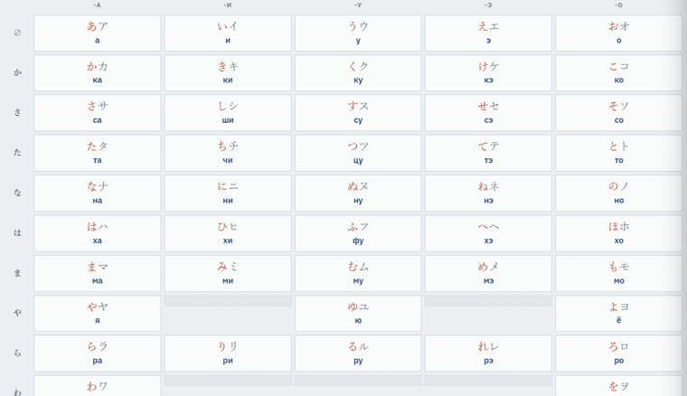

Сониуч. Бүтээлч. Шаргуу.
Япон хэлтэй найзалцгаая
Энэ сайт япон хэлийг амар замаар нь биш, үндсээс нь сурахад зориулсан зургаан өөр хэсгээс бүрдэнэ.
Явцаа хянахын тулд нэвтэрнэ үү
Таны оноо болон хэрэгсэл тус бүрийн явц энд харагдана.
Канагийн үүсэл
Япон бичиг гурван хоорондоо хамааралгүй цагаан толгой мэт харагдсаар байвал эндээс эхэлнэ үү. Япон дахь анхны бичгээс дайны дараах шинэчлэл хүртэлх, дарж дэлгэдэг он цагийн хэлхээс; 46 кана тус бүрийн монгол дуудлага, гарал үүслийн ханз; мөн англи үгсийг яагаад катаканагаар бичдэгийн дөрвөн алхамт хариулт.
9 ҮЕ ШАТ · 46 КАНА · ХАНЗ МЭДЭХ ШААРДЛАГАГҮЙ Эхлэх →
Үг холбох дасгал
Япон үгийг утга нь ижил монгол үгтэй холбох дасгал. Ижил дуудлагын язгууртай хэд хэдэн ханзыг зэрэг холбовол олон үг нэг дор арилна. Шат бүр 4 минутаас эхэлж, хос таарах бүрд цаг нэмэгдэнэ. Хоёр удаа буруу дарвал арилсан хос эргэж гарч ирнэ.
60 ШАТ · 5 JLPT ЗЭРЭГЛЭЛ · ОЙРОЛЦООГООР 1,500 ҮГ Тоглох →
Дуудлагын бүлэг
Ханз болгоны дуудлагыг тусад нь цээжлэх хэцүү. Тиймээс энд ханзуудыг дуудлагын язгуураар нь бүлэглэж, зүй тогтлыг нь ойлгоход тусална. Нэг язгуурыг сурвал тэр бүлгийн бусад ханзыг таамаглаж эхэлнэ — ихэвчлэн хоёр, гурав, хамгийн томд нь арав гаруй.
424 БҮЛЭГ · 1,128 ХАНЗ · 5 JLPT ЗЭРЭГЛЭЛ Үзэх →
Дүрэм холбох
Өгүүлбэрийн доогуур зураастай хэсгийг утгыг нь өөрчлөхгүйгээр өөр үгээр солих дасгал. Цаг багатай ч зөв сонгох бүрд цаг нэмэгдэнэ.
400 ӨГҮҮЛБЭР · 2 ЗАМ · 40 ШАТ Тоглох →
Уншлагын дадлага
Текстийг чангаар уншихад дуу хоолойг чинь таньж, уншиж яваа үгийг чинь дагаад автоматаар тодруулна. Хөгжүүлэлт нь үргэлжилж байгаа тул танихгүй үг гарвал алгасаж болно.
72 ТЕКСТ · 2 ЗАМ Унших →
Монгол-Япон толь бичиг
Монгол эсвэл япон үг хайхад нөгөө талын хос үг нь гарч ирнэ. Таван эх сурвалжийг нэгтгэсэн: Үг холбох дасгалын үгсийн сан, гараар хянасан гүүр толь, N5-ын үндсэн үгс, өдөр тутмын орчин үеийн үгс, Канго ⇄ Ваго хосууд. Хоёр дахь таб нь Канго ⇄ Ваго толь бичгийг агуулна — таны хайсан ханзны хятад гаралтай, албан ёсны канго (漢語) хэлбэр, уугуул япон ваго (和語) хэлбэр, мөн өгүүлбэрт хэрэглэгдэх хүндэтгэлийн (尊敬語) болон даруу (謙譲語) үйл үгийн хэлбэрүүд.
3,537 ҮГ Хайх →